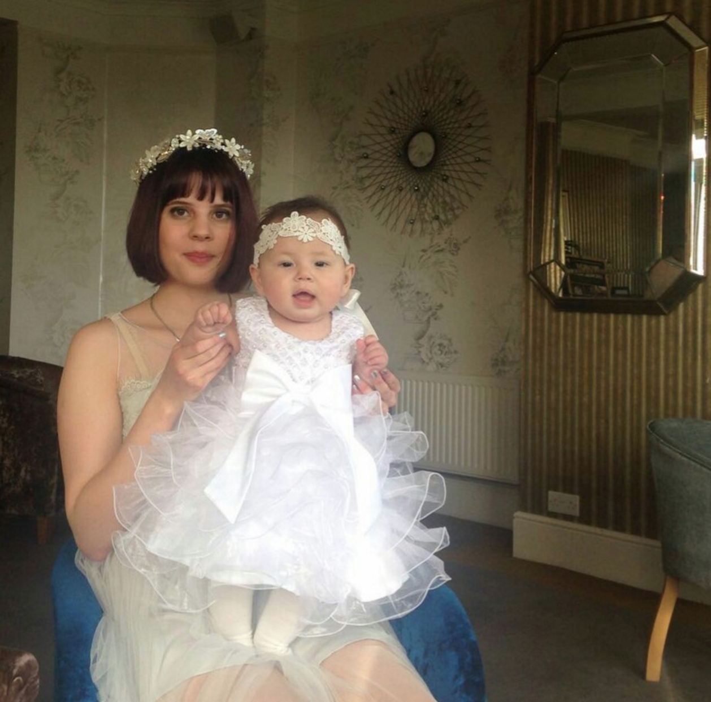

It’s far from romantic. Government intrusion into relationships goes beyond what you might think – your ability to live with the person you marry depends on your gender, a postcode lottery, and now on the origins of your partner.
New Home Office statistics show a correlation between spouse nationality and the chances of their visa application being successful.
Spouses from Afghanistan, Algeria and Pakistan are up to five times more likely to be rejected than those from America, Canada or Australia. More than one in three Afghans married to a British citizen are prevented from joining their family in Britain, while on the other end of the spectrum, less than 7% of people from America are rejected.
"The government refutes any suggestion of discrimination. It says current law welcomes “those who wish to make a life in the UK with their family, work hard and make a contribution. But family life must not be established here at the taxpayer's expense.” But the statistics seem to tell a different story – where your spouse is from has a distinct impact on your ability to have a united family.
In July 2012, changes to family immigration rules introduced different requirements for non-European spouses to be able to join their families in Britain.
In brief, these include:
Watch our quick explanation to find out more about the regulations.
-- video here --The English language requirement might partially explain the difference in success rates of spouses from different nationalities. But Jamaica, whose national language is English, has a rejection rate of 29% – more than four times that of America.
Don Flynn, director of Migrants Rights Network (MRN), an NGO campaigning against the rules, argues the system is very unfair, as it effectively deprives a large number of British citizens of their fundamental right to have a family.
“Families have been made a target of the government’s efforts to drive down net migration,” he says. “The rules have prevented around 18,000 families from being unified in the past three years.”
What worries some other organisations is that the right to a unified family life seems to depend on income. Put bluntly: poor people are deprived of the right to live with who they love.
According to the Organisation of National Statistics, around 40% of British taxpayers fail to reach the £18,600 threshold, so would be barred from living in the UK with their foreign spouse. The threshold is set at 140% of an annual salary on minimum wage.
Part time workers, the unemployed, women, those living outside London, and other people averaging lower salaries than the rest of the population are the groups hit the hardest.
-- video here --Children are among the victims of the rules. Anne Longfield, the Children’s Commissioner of England, says spouse visa laws fail to protect children’s best interests, and it was found that in 72% of cases the existence of children was ignored.
Among the tens of thousands of these cases, is the story of Salli, from England, and Izzat, from Uzbekistan. They fell in love in South Korea and planned their lives together – marriage, life back in England, children.
Part of it went to plan: they got married and Salli got pregnant in 2014. But when she returned to England and Izzat applied for a spouse visa, they found the rules had changed. Salli only worked part time, her savings didn’t reach £62,500 and her parents were not allowed to contribute. So Salli went through pregnancy without her husband.
He was also refused a visa to witness the birth of their daughter, Layla, and for months Salli has struggled with post-natal depression alone.
"I have never been so stressed and depressed in my life. Even if I work I would be extremely lucky to get a job offering a salary of £18,600," she says.
Salli and Layla in January 2016. The family doesn't have a photo with all three family members together, because Izzat has never been allowed into the UK
Salli has raised her daughter alone. She is effectively a single mother, and her earnings go straight into savings to sponsor her husband’s visa. Salli and Layla’s only chance to be reunited with Izzat is to emigrate to Uzbekistan.
At the moment, EU citizens living in the UK are not subject to the same regulations as British people. If someone from the EU marries a foreign national, that person can simply come and join them and both can live happily in the UK.
That's a privilege not afforded to Britain's own citizens, and it's a loophole Prime Minister David Cameron was eager to change in his recent negotiations. As immigration minister, James Brokenshire, says: “The Prime Minister’s re-negotiation with the EU secured agreement for new legislation to prevent migrants from using marriage to an EU national living in the UK to avoid our tough domestic immigration rules, including on income and the English language requirement.”
Nobody can give confident assurances about what would or wouldn't happen for migration after the EU referendum on June 23, but there are clues.
Mr Flynn of MRN thinks that regardless of the referendum’s outcomes, migration policies will tighten up more. “Even if Britain votes to stay in the EU, the government has already declared it wants to give itself a degree of flexibility in handling family reunion rights of European migrants,” he says.
This means more families could join Salli and Izzat in their struggles to live a normal family life and keep their wedding vows. One campaigner thinks the vows should be changed: “for richer, for poorer; in sickness and in health; to love and to cherish; till Theresa May do us part.”